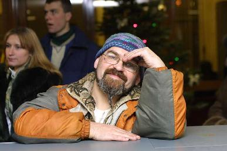

Заппа'zУх!Ой!
русский более или менее регулярный бюллетень для поклонников американского композитора
Frank'а Vincent'а Zappa'ы
Выпуск.31 (30 апреля 2001)
Uri
Дорогие друзья. Соотечественники. У кого из вас сердце сладко не замирало во время чтения liners notes альбома Civilization Phaze III.
cover design by Uri Balashov
Наш? Неужели наш? Спрашивали вы сами себя. Сознайтесь?
И вот вам наконец ответ. Конечно, наш! Самый настоящий Юрий и Балашов. Художник из Москвы. Автор обложки последнего прижизненного альбома FZ. Благодаря чудесному посредничеству замечательного фотографа Игоря Верещагина (он теперь тоже из Москвы:-)) мне даже удалось расспросить Юру о том, как мы в очередной раз всем доказали, что не лаптем щи хлебаем.
Жаль лишь одного, если бы Юра говорил, а не писал, как мы его заставили, вы бы, конечно, узнали много больше. И то, как поразился Фрэнк в московской столовой экономной нарезке одной салфетки на три подтирки, и как сам он, Юра, сдав FZ заказ, сидел на травке под калифорнийскими звездами (они там красные и зеленые, в Эл-Эй, потому, что живут на крыльях боингов) и не мог поверить тому, что, вот, вошел в историю.
Но, впрочем, это даже к лучшему. Значит будет продолжение. В самом деле, главное, что появился Uri. А уж Uri 2 родится сам собой. Не зря же место действия North Hollywood.

* * *
Владимир Советов: Юра, Вы, кажется, второй русский человек после Николая Слонимского, которому довелось не бизнес делать с Фрэнком Заппой, а нечто разумное, доброе, вечное. Как Вы познакомились с ФЗ? Как оказались в Лос-Анджелесе в нужный момент и в нужное время?
Юрий Балашов: Справедливости ради следует заметить, что и Стас Намин делал с ФЗ
разумное, доброе, вечное.
Здесь был текст первого "заочного" интервью с Юрой.
Окончательный вариант, сложившийся после встречи автора с героем,
тут
ВС: Когда Вы вернулись из Америки? И чем Вы занимаетесь сейчас в России?
ЮБ: Я приехал в Москву в 1996 зимой. И постепенно, со временем вернулся к той работе, которая была прервана моим отъездом. Занимаюсь сценографией, оформлением CD, плакатами, мерчендайзингом. У меня есть мечта - поставить балет CPIII.
ВС: Продолжаете ли Вы контактировать с суровыми наследниками Фрэнка? Можно ли в будущем ожидать еще какой-нибудь музыкальной штуковины нашего маэстро в блестящем конверте Вашей работы?
* * *
На этот вопрос Юра не ответил. Игорь думает, что не успел. Может быть. Кстати, к ответам Юры Игорь сделал такое собственное добавление.
"Володя, я стал копаться в сети и нашел что CIVILIZATION PHAZE III won a 1996 Grammy Award for Best Recording Package - Boxed. - сам Юра об этом понятия не имел, он конечно очень обрадовался."
Grammy Award for Best Recording Package! Юре Балашову из Москвы!
Вот только Заппы ему забыли об этом сообщить... Наверное, открытка потерялась.
Ничего не поделаешь. Печкин - это тоже наше все.
Искренне Ваш, Владимир Советов
http://www.arf.ru/
Фото © Игорь Верещагин, 2001
| Домой | Заппа'zУх!Ой! | Поиск | Хозяин |